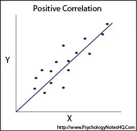
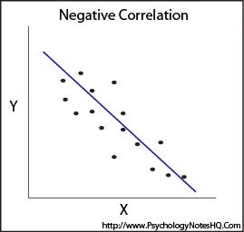

What is Correlation ?
Correlation
Correlation Analysis is statistical method that is used to discover if there is a relationship between two variables/datasets, and how strong that relationship may be.
for example , correlation analysis is used to analyse quantitative data gathered from research methods such as surveys and polls, to identify whether there is any significant connections, patterns, or trends between the two.

If the value of one variable (X) increases, the value of the second variable (Y) also increases.

If the value of one variable (X) increases, the value of the second variable (Y) decreases.